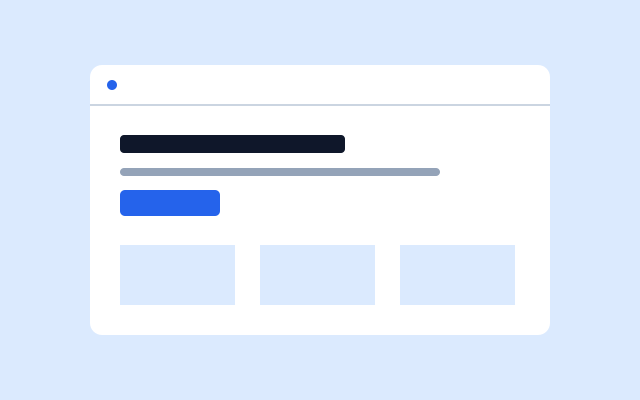
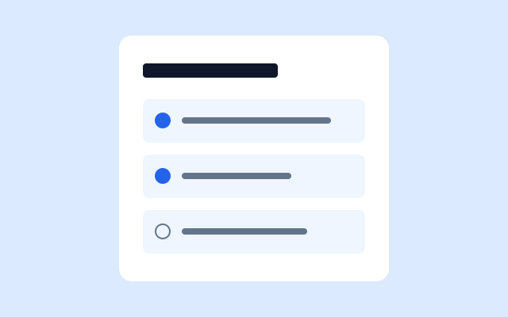

Example layout · 01
[Your website project]
[Describe the website’s purpose, your contribution, the tools you used, and one challenge you solved.]
Demo and source links: add when available.
Projects
A space for the ideas I’ve built and the lessons I’ve learned along the way.
These three entries are example layouts, not claims of completed work. Replace them with your own projects, screenshots, and links.

[Describe the website’s purpose, your contribution, the tools you used, and one challenge you solved.]
Demo and source links: add when available.
[Explain the question you explored, your approach, and what you learned. Include your role if it was a group project.]
Report and source links: add when available.

[Introduce the problem, describe what you made, and share a result or an improvement you would make next.]
Demo and source links: add when available.